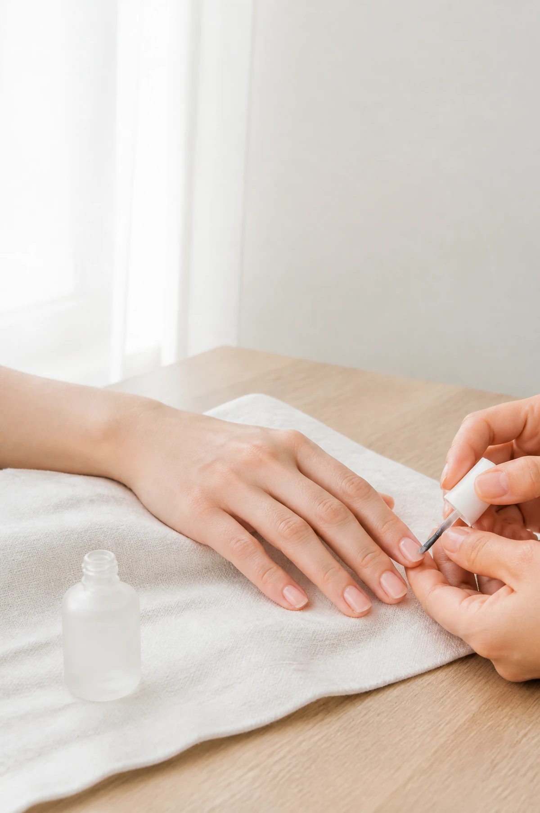
Manicura
Limado, cutícula y un esmalte que respira. Para quien quiere las manos en orden sin que se note el esfuerzo.
desde 22 €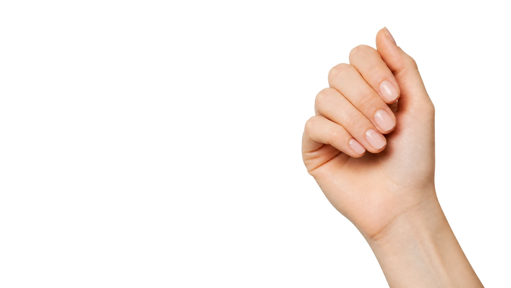
Salón de uñas · Pamplona
Manicura, pedicura y nail art con calma, en un sitio pensado para que te olvides del reloj.
Reserva tu cita01
Entras con prisa. Sales con las manos cuidadas, la cabeza despejada y media hora que ha sido solo tuya.
Lo que hacemos

Limado, cutícula y un esmalte que respira. Para quien quiere las manos en orden sin que se note el esfuerzo.
desde 22 €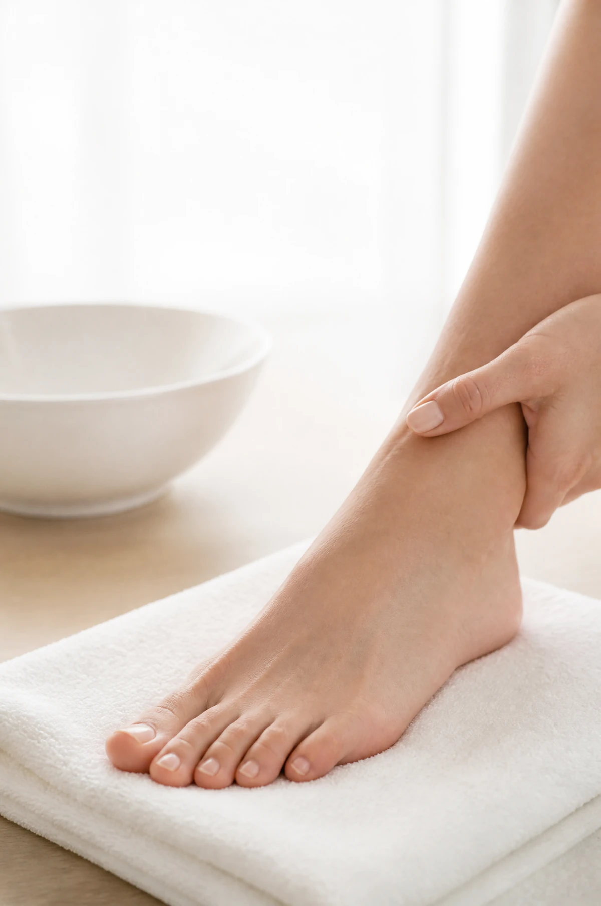
Pies a punto para el verano o para la vida. Baño, exfoliación, cutícula y color, en una silla cómoda.
desde 28 €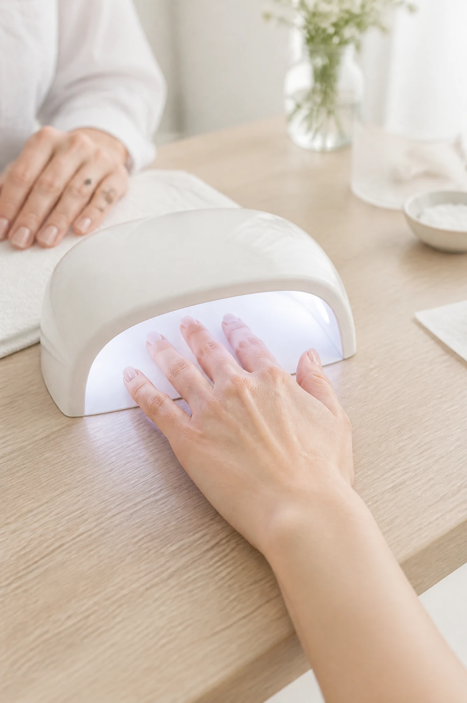
Tres semanas de color intacto. Curado en lámpara, sin olores fuertes y con una retirada que cuida la uña.
desde 30 €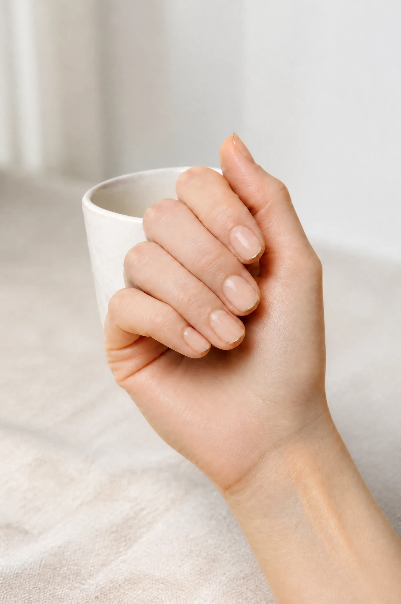
Un detalle en cada uña y nada más. Líneas finas, puntos de oro, francesas con otra luz.
desde 5 € por uñaEl espacio
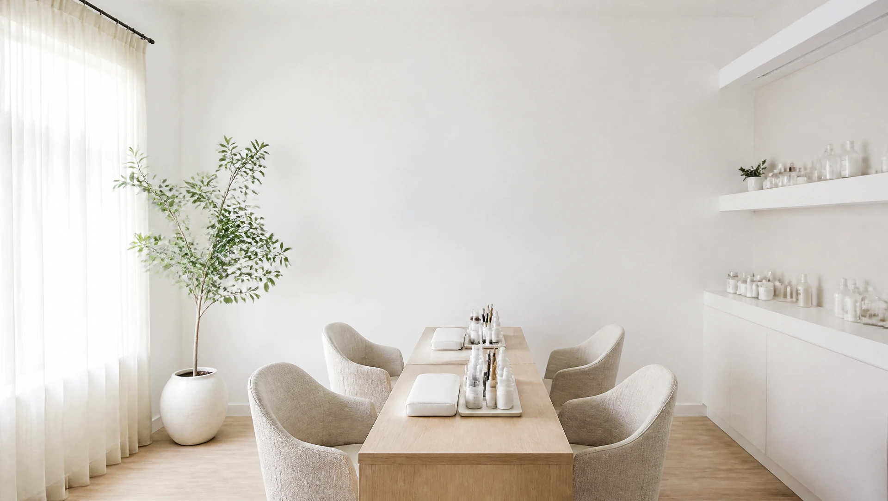
Una ventana grande y una cortina fina. No hace falta encender nada hasta las siete, y cuando se enciende es cálido.
Una mesa, dos sillas por lado, sin música alta ni televisión. Puedes hablar, leer o no hacer nada.
Esmaltes sin tolueno ni formol, toallas que se lavan cada día y una mesa que se limpia entre clienta y clienta.
Uñas cortas, siempre
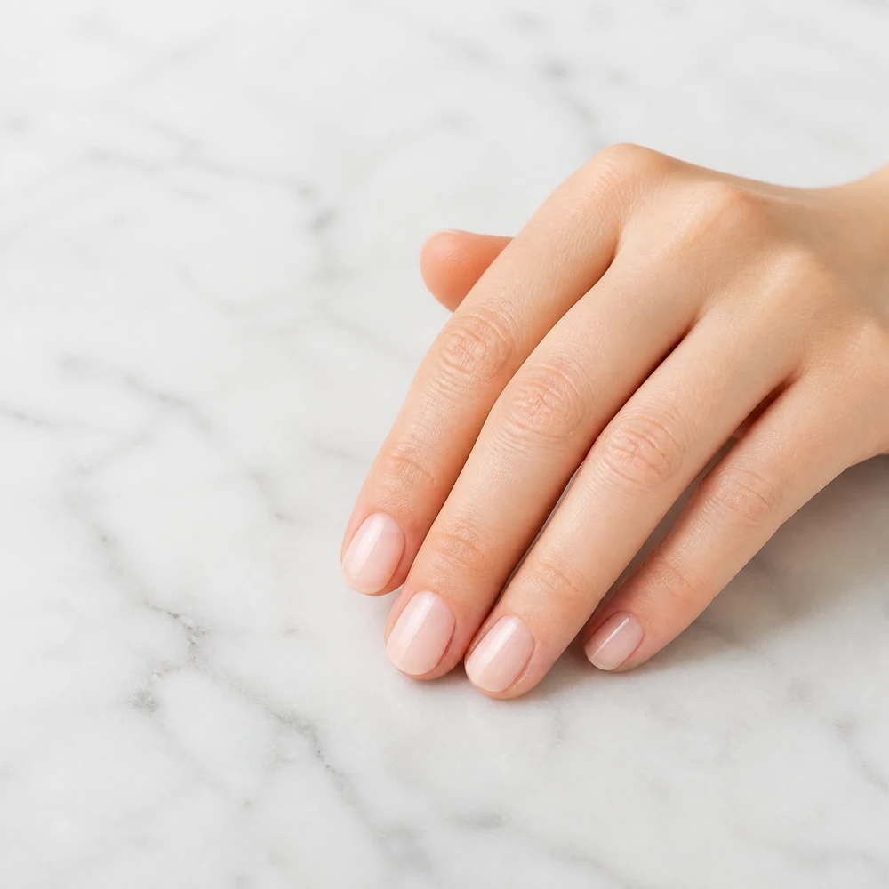
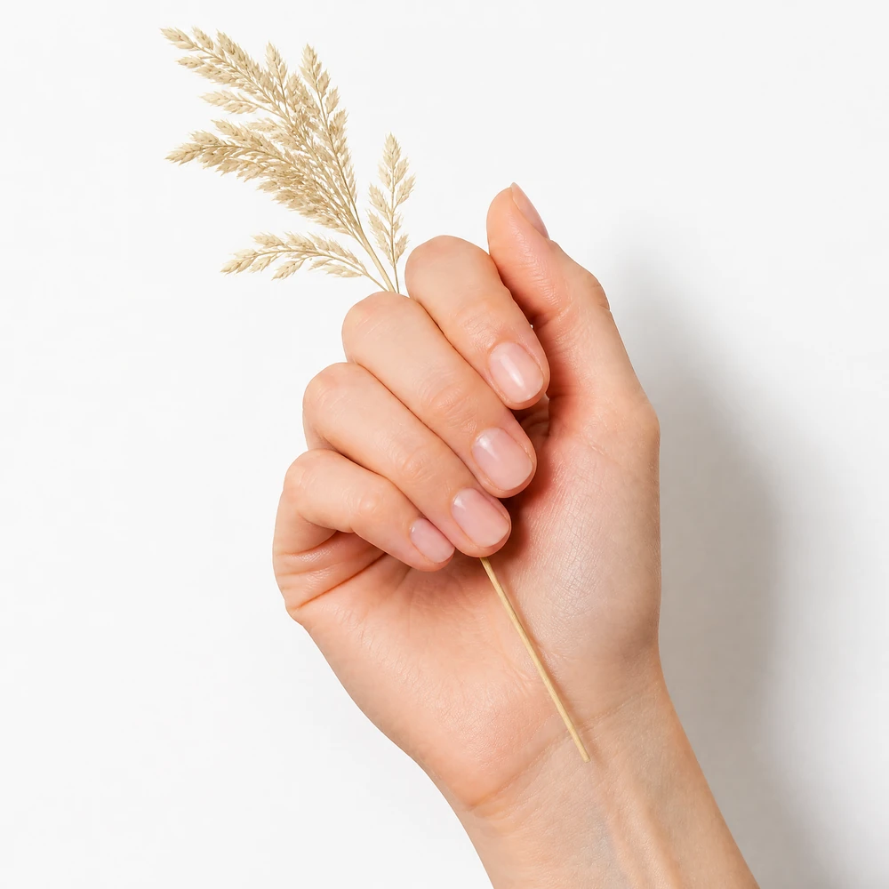
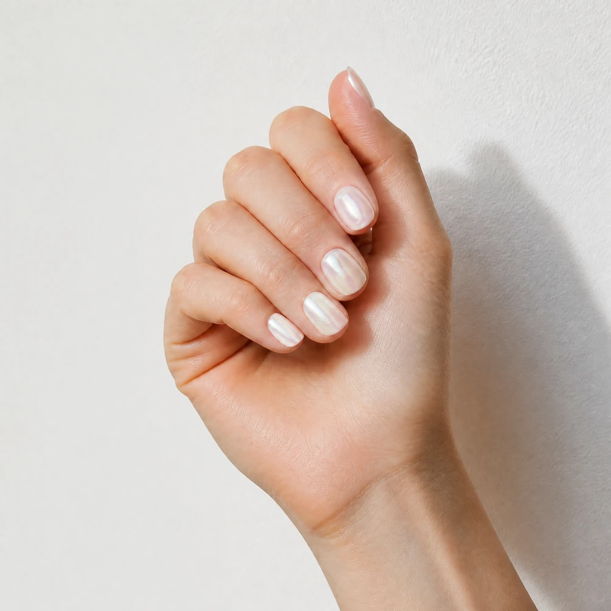
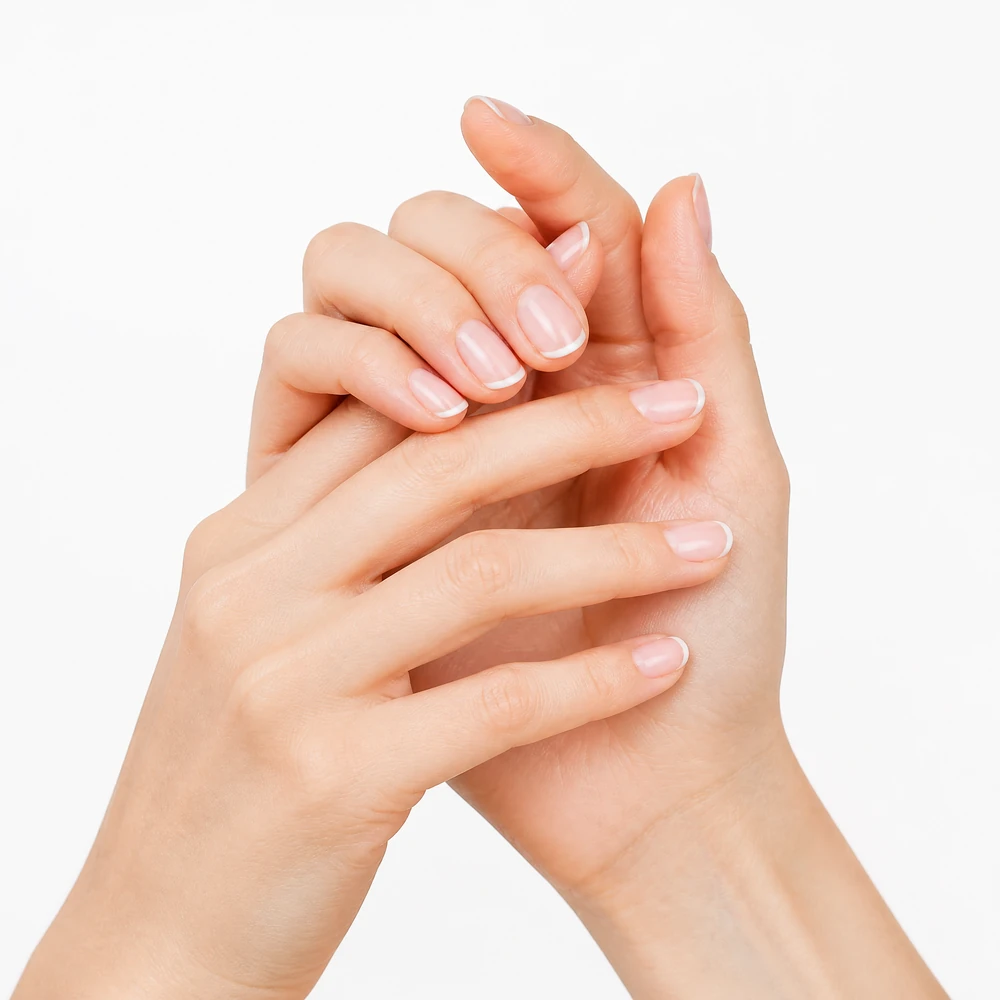
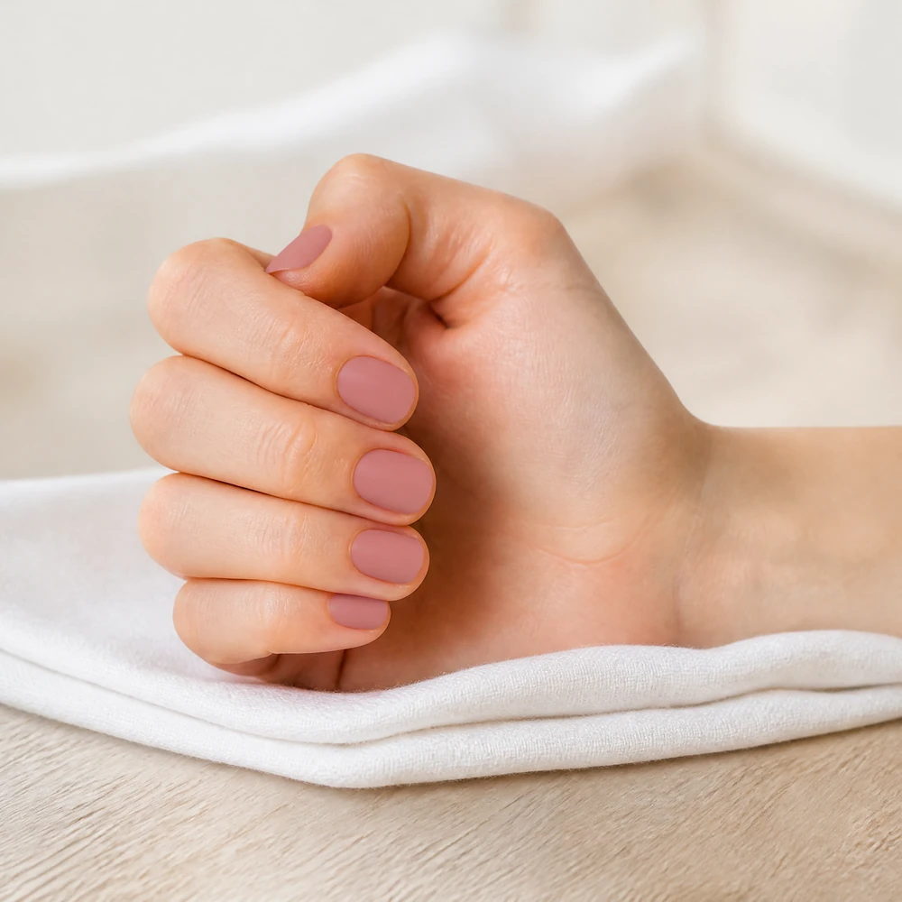
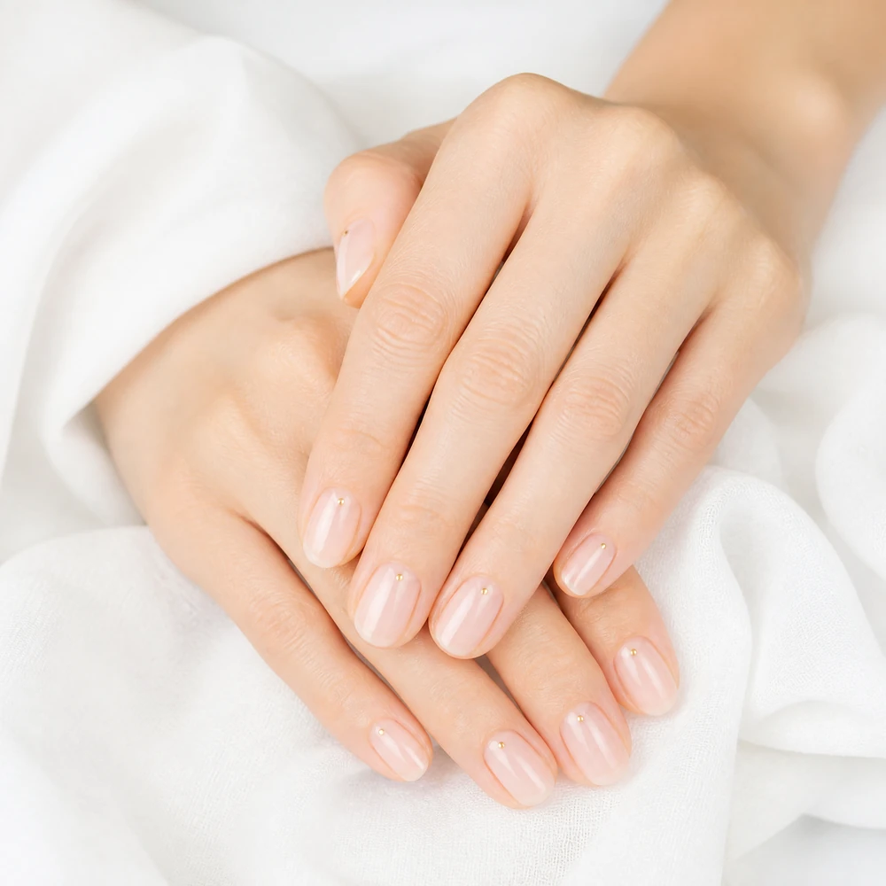
Una uña bien hecha no se nota. Se nota la mano.
Detrás de Nácar
Doce años haciendo uñas, los últimos cinco en este local del Casco Viejo. Aprendió en Barcelona, volvió a Pamplona y abrió Nácar con una idea: hacer menos cosas y hacerlas mejor.
Trabaja sola, con cita, y nunca dos personas a la vez. Por eso aquí nadie espera.
Salí con las manos preciosas y sin la sensación de haber pasado por una cadena de montaje.Leire, clienta desde 2024
El semipermanente me dura las tres semanas enteras. Y el sitio es un descanso.Ana, clienta desde 2023
Fui por una francesa para una boda y ahora voy cada mes.Nerea, clienta desde 2025
Escríbenos por WhatsApp y te decimos hueco en el día. Sin registros ni aplicaciones.
Escribir por WhatsApp Nácar · Calle Mayor, 00 · Pamplona · 600 000 000